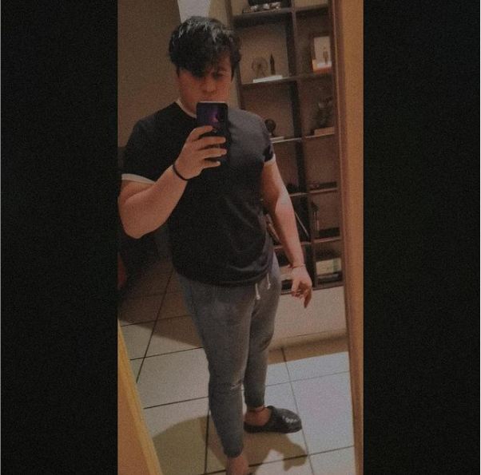
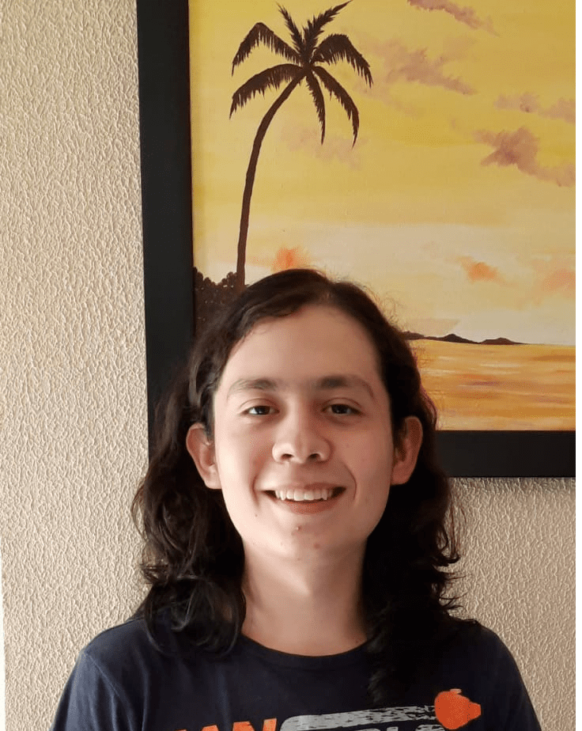

Equipo Bichotas
Integrantes de equipo
Emilio Alejandro Ramírez Gaytán

Soy un estudiante de Ingenieria en Software que se especializa en el Frontend y en creación grafica de diseños propios. Igualmente me especializo en la creación de bases de datos y en la edición de estas mismas. Igualmente se utilizar Vue, VueX y Vuetify al momento de utilizarlos en Visual Studio Code.
Ezekiel Jimenez Ortiz
Soy un estudiante de la ingeniería en software y sistemas computacionales, Cuento con los conocimientos básicos de Java, JavaScrip, diseño de interfaz web, C#, C++, HTML, manejo de los diferentes sistemas de NetBeans, VisualStudio, VisualStudio Code, MySQL, También cuento con los conocimientos necesarios para empezar a modelar un sistema, todo lo orientado a diagramas uml, de flujo, clase, etc…
Demian Orozco Rodriguez
Tengo conocimientos acerca de front end básicos, manejo el uso de Visual Studio y Visual Studio Code. Manejo los lenguajes: Python, Java y JavaScript nivel junior, asi como C# y C++ nivel basico.
Josué Iael Chávez Sandoval

Como ingeniero en software y Sistemas cuento con conocimientos de lenguajes de programación como: C#, C++, Java, Python. También manejo diversas IDEs de programación como Visual Studio Code, Visual Studio y NetBeans. Se administrar bases de datos en MySQL y SQL Server. Puedo elaborar aplicaciones web utilizando HTML, JavaScript y CSS.